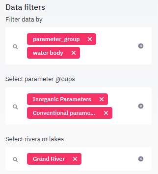
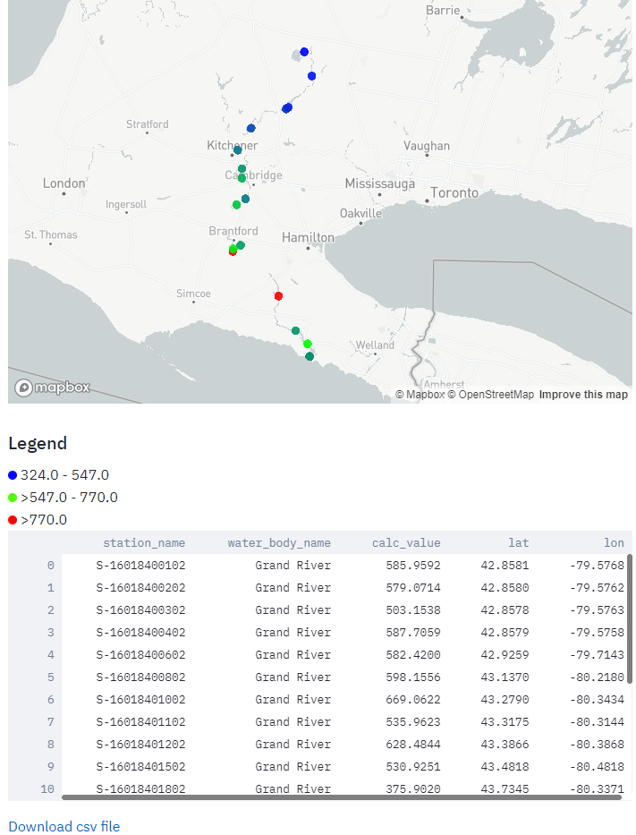
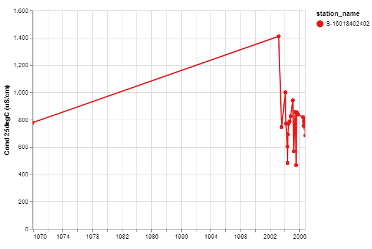

Tutorial 3: Station data analysis¶
Introduction¶
The first two tutorials have shown you, how toget an oversight on a large dataset quickly and efficiently. In this tutorial, we will learn techniques to explore data on a local and site level. For this we will use the second data collection Ontario Provincial (Stream) Water Quality Monitoring Network Data. It consists on water chemistry data from over 1100 river and lake locations. This tutorial will focus on representing data from the Grand River flowing south from its source near Wareham, Ontario, and emptying into the north shore of Lake Erie. for the purpose of this tutorial we are specifically interested in changes occurring from upstream to downstream and in long term water quality changes.
Organizing the data¶
Start by selecting the Plotting menu. In order to work with the data efficiently, we have to use the filters. Filtering for the required stations and parameters not only makes it easier to work with the shorter lists, but also it will accellerate the creation of plots and tables since calculations are based on a smaller dataset. Go to the Data filters section and filter for the following data: invoke the filters for parameter_group and water body. Then select Inorganic parameters and Conventional parameters in the parameter_group filter and Grand river in the water body filter. Note that since the list of rivers is very long, it is most efficient to type in at least the beginning if the river name, the list of stations will adapt to rivers matching the entered characters and finally you can pick the river from this much shorter list.

Generating detail plots for a station¶
We change the default setting for the plot type to the map and select the Cond25 (conductivity at 25 °C) parameter. Conductivity is at the same time a good estimator of dissolved inorganic matter and also is measured routinely, therefore all stations are certain to show on the map. The map below should show on your viewport. Use the scroll wheel on your mouse to zoom and center the stations on the plot. Note that conductivity rises gradually on the travel from the source area downstream. In order to gain further insight in the values, select the Show data checkbox. the map is autoamticaly rerendered and you will find a table with all data used below the plot. Each value represents the average of all data available at this station. You will find that the highest average occurs at station S-16018402402.

To further investigate the spatial upstream-downstream trend for other parameters, select parameter from the Group plots by select box. This generates a separate map plot for every parameter included in the parameter list (currently set to Inorganic parameters).
Concentration changes over time represent another important aspect in water quality studies. Simply reset the Group plots by select box to none and select the Time series plot type. Also make sure, that COND25 is the selected parameter. A plot is generating showing the conductivity changes over time for all station. Since the Grand river has 20 stations, the plot becomes very difficult to read. This data must obviously be plotted with fewer stations per plot. There are two options to achieve this goal:
1 You may again group the plots by the station parameter, creating a plot for each station. This method is convenient, if you want to compare plots to each other. use the parameter filter if you are interested in only a few specific parameters
2 Define the station in the Data filters section as an additional filter, then start selecting stations. This is usually faster, since only one plot needs to be rendered and you may include multiple stations on the same time series plot.
